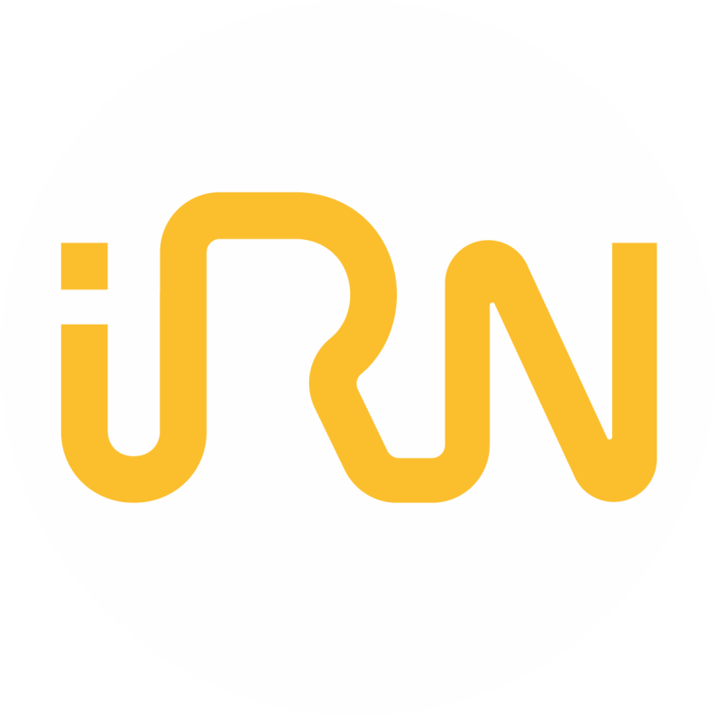

IRN — Instituto dos Registos e Notariado
Estagiário de Suporte IT
De 18/11/2024 a 20/05/2025
Outras Experiências Relevantes
Carreira de Futebol
Dragon Force e Hernâni Gonçalves nas equipas de formação.
Leixões SC e Padroense FC dos Sub 14 aos Sub 17.
Carreira de Clarinete
Execução de clarinete durante 4 anos com participações em atuações.
Carreira de Natação
Prática de natação durante 6 anos, alcançando o Nível 5 competitivo.